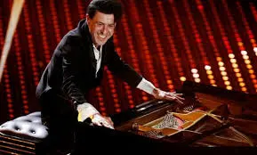
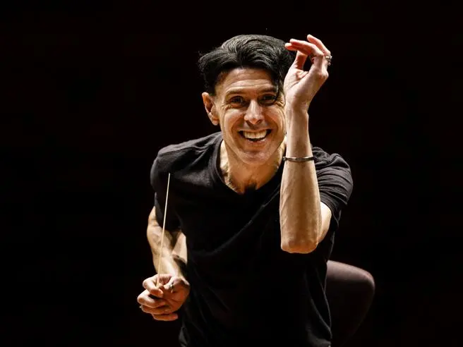
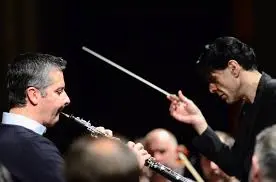

Ezio Bosso: il mio pensiero

Da qualche giorno è venuto a mancare un grande direttore d'orchestra Ezio Bosso, voglio dire il mio pensiero.
Non ho mai detto che di sera, spesse volte, quando non riesco a trovare un modo per distrarmi, mi piace mettere le cuffiette e ascoltare il pianoforte su Spotify. Mi rilassa tanto e mi fa riflettere. Magari mentre gioco a quei giochini sul telefono.
E proprio in una di quelle sere, mentre i brani andavano avanti, è saltato fuori anche Ezio Bosso. Ho ascoltato tante volte la sua musica, le sue sonate, che sono pieni di nostalgia e trasporto.
Riguardo a ciò vi lascio qui sotto un brano che ormai è diventato parte della mia Playlist.
Non avevamo la stessa patologia, ne lo stesso percorso di vita e nemmeno l'età, ma le volte in cui lo ascoltavo suonare, che vedevo la sua energia, mi sentivo toccare nel profondo.
Ecco, forse guardare lui scatenava in me un'energia fortissima, mi trasmetteva ancor di più voglia di vivere.
Il suo sentirsi libero da ogni cosa che tormentasse la sua vita, nel momento in cui suonava spariva tutto e lo trasmetteva.
Il bello di Ezio Bosso era proprio il trasporto. Io l'ho sempre visto così.

Oggi scrivo di lui pur non conoscendo niente di lui, pur non essendo esperta di musica, ne di pianoforte ma sono consapevole delle battaglie che anche lui ha dovuto affrontare. Le stesse battaglie che ogni persona in carrozzina si trova ad affrontare.
Certo, dopo anni sicuramente, essendo un direttore d'orchestra e un compositore di grande stima, di sicuro le battaglie quotidiane si saranno ridimensionate.
Ma ciò non toglie che le battaglie più grandi le vivi quando sei solo con te stesso. E anche se non mi permetto di sindacare nel suo IO interiore, so per certo che abbiamo vissuto le stesse battaglie interiore.
Le mille domande, i mille perché, l'accettazione, il pregiudizio, la società e la ricerca della serenità personale.
Sono sentimenti che abbiamo vissuto un po' tutti nella vita e sicuramente noi un po' di più.

Credo fermamente che sia stato un'artista che non è stato valorizzato come meritava, conosciuto tanto nel mondo dello spettacolo ma poco sul grande schermo.
Spero che un giorno il suo vissuto potrà essere ricordato in un film, così da far vedere al mondo che nonostante le mille battaglie, la passione ed il talento vince su tutto. La voglia di vivere è capace di spostare macigni di preconcetti!
Vi posto una poesia scritta proprio Ezio Bosso:
“Io li conosco i domani che non arrivano mai”
Io li conosco i domani che non arrivano mai
Conosco la stanza stretta
E la luce che manca da cercare dentro
Io li conosco i giorni che passano uguali
Fatti di sonno e dolore e sonno
per dimenticare il dolore
Conosco la paura di quei domani lontani
Che sembra il binocolo non basti
Ma questi giorni sono quelli per ricordare
Le cose belle fatte
Le fortune vissute
I sorrisi scambiati che valgono baci e abbracci
Questi sono i giorni per ricordare
Per correggere e giocare
Si, giocare a immaginare domani
Perché il domani quello col sole vero arriva
E dovremo immaginarlo migliore
Per costruirlo
Perché domani non dovremo ricostruire
Ma costruire e costruendo sognare
Perché rinascere vuole dire costruire
Insieme uno per uno
Adesso però state a casa pensando a domani
E costruire è bellissimo
Il gioco più bello
Cominciamo…
«La prima cosa che farò è mettermi al sole.
La seconda sarà abbracciare un albero».
Ezio Bosso
